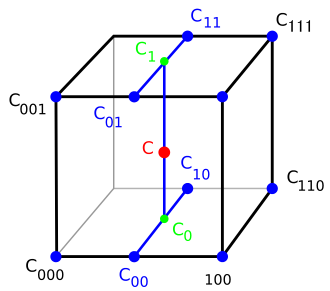
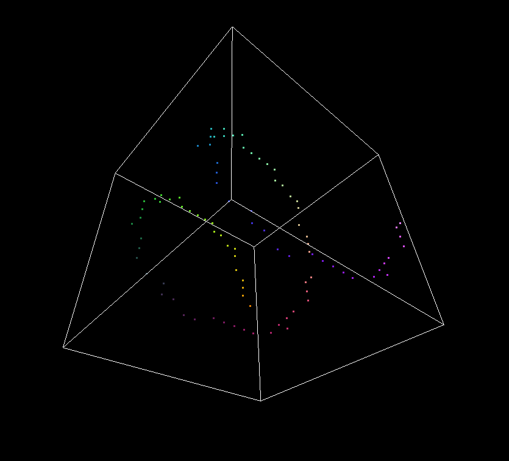
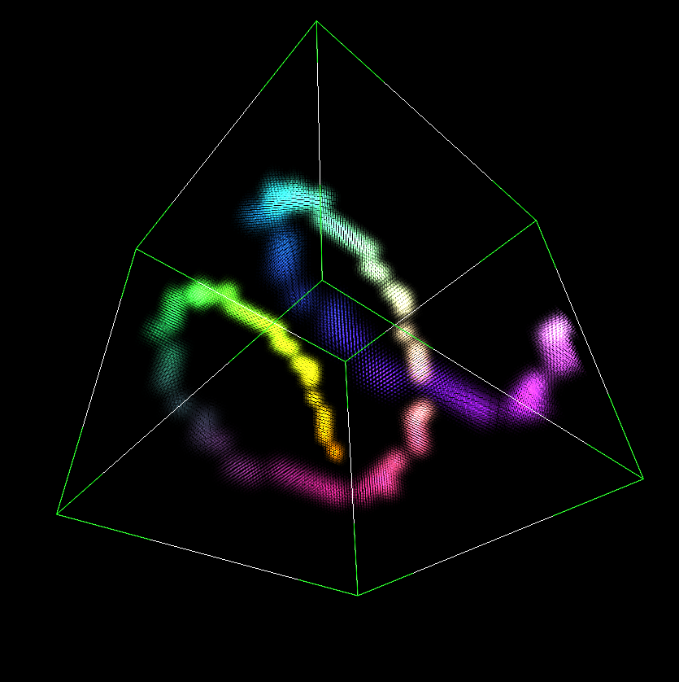

快速三线性插值
最近需要对一个体素进行插值，并且应用到一张大图像上。这个本来用三线性插值很容易就实现了，但是体素的尺寸很小，长宽高大概20x15x10的大小，图像的尺寸非常大，差不多是4000x3000，等我实现完普通的三线性插值后，发现算法速度实在太慢，单是这一项三线性插值耗费的时间就占了总程序的一半多。其实如果能够用GPU，利用OpenGL里面的3d texture是最方便，也最快的，但是图像从内存传送到GPU需要耗费一定时间，并且很多情况下没法用GPU。所以只能推导一下，在体素上事先就进行预计算，然后再用参数应用到大图像上。
原理
借用一张常用的三线性插值示意图：

三线性插值实际上可以通过7次线性插值实现。首先假定使用左手坐标系，z轴朝上，在x方向上对四条棱边进行四次插值，得到每条边上的四个点的值c00,c01,c10,c11，然后在y方向上对四个点进行插值，得到两条线段以及中间的两个点的值c0,c1，然后在z方向上插值，得到最终的c点的值。
我们知道，对于线性插值来说，其公式为：
其中包括四次加减运算，三次乘除运算，因此总的来说，进行一次三线性插值，运算总数为28次加减运算，21次乘除运算，并且往体素中寻找位置并且取值还要花费大量的运算，对于大图像来说，总的运算耗费的时间非常大。
假定立方体原点为(x0,y0,z0)，离原点最远的点为(x1,y1,z1)，立方体的每个顶点的值在体素中是知道的。值得注意的是，虽然现在计算的坐标位置实际上是插值时的位置，但是实际上插值只与待求点(x,y,z)与(x0,y0,z0)和(x1,y1,z1)的相对位置比有关，不过为了后续插值的方便，建议首先将点映射到目标坐标上，这样在插值的时候就不需要再进行坐标映射。首先对x方向上插值，得到yz平面上四个点的值分别为f1,f2,f3,f4：
我们可以把它们转换成矩阵的形式，比如：
注意一下，这里面隐含了x1和x0不能相等，如果两者相等，则f1=f(x0,y0,z0)=f(x1,y0,z0)恒成立，所以直接设置成x1=1,x0=0，再用上述公式即可。注意到，这里面的矩阵是不包含未知数的，这是个常数矩阵。这样一来，我们可以事先在体素上计算好矩阵，最后再应用到图像上就好了。当然我们这还只是一次线性插值，现在继续插值。我们令上面式子f1,f2,f3,f4中右侧矩阵分别为M1,M2,M3,M4，因为是常数矩阵，我们将他们用常数a,b替换。同样利用线性插值方法，现在在y轴方向上插值，计算1,2插值的点5,以及3,4插值的点6
我们将a,b代入M，并且简化一下，同样提取出变量和常量，可以将f5和f6成矩阵的形式，跟上面一样，我们将常数矩阵用四个常数替换：
这里当y1=y0时，f5=f1=f2恒成立，同样地，事先设置一下y1=1,y0=0即可。
得到了点5和点6的值后，我们就剩下最后一个插值，沿z方向上进行插值，得到点7的值f7。不过f7表示成矩阵有点困难，因为包含三个变量x,y,z，需要三个维度的常数矩阵，也就是三阶张量，不过好在变量z在表达式中只包含常数项和一次项，因此，我们将z的常数项和z的一次项用两个矩阵表示：
常数项先计算成中间值h1~h8，然后f7的计算如下图所示
当z1=z0时，则令z1=1,z0=0。
上式计算出来的f7即为三线性插值的结果。注意上面的h1~h8在插值前都是已知的，我们可以在插值前，首先计算好每个体素的h值，然后最后再应用f7的计算公式，直接求出f7即可。对于常数项的计算，因为有许多项公用分母，所以可以把分子和分母分开计算。
因此插值的时候总共需要进行的运算为7次乘法和7次加法，并且h1~h8是包含在小体素内的，对应于插值之后的大块区域，因此插值后的一块区域是公用h1~h8的，在插值的时候可以按区域插值，从而提高cache的效率。
当然f7也可以写成这样：
实现
预计算参数的实现直接按照上面的常数参数计算即可，因为预计算是在小的体素上面实现的，所以不用太担心速度。
/* precompute trilinear coefficients
* v: f(x0,y0,z0), f(x1,y0,z0), f(x0,y1,z0), f(x1,y1,z0)
* f(x0,y0,z1), f(x1,y0,z1), f(x0,y1,z1), f(x1,y1,z1)
*/
template <typename T>
array<T,8> PreComp(float x0, float y0, float z0,
float x1, float y1, float z1, const array<T,8>& v)
{
const float epsilon = 10e-6f;
if (x1 - x0 < epsilon) { x1 = 1.f; x0 = 0.f; }
if (y1 - y0 < epsilon) { y1 = 1.f; y0 = 0.f; }
if (z1 - z0 < epsilon) { z1 = 1.f; z0 = 0.f; }
float deno = (x1 - x0)*(y1 - y0)*(z1 - z0);
float nume = 1.f / deno;
T a1 = x1 * v[0] - x0 * v[1];
T a2 = x1 * v[2] - x0 * v[3];
T a3 = x1 * v[4] - x0 * v[5];
T a4 = x1 * v[6] - x0 * v[7];
T b1 = v[1] - v[0];
T b2 = v[3] - v[2];
T b3 = v[5] - v[4];
T b4 = v[7] - v[6];
T c5 = y1 * a1 - y0 * a2;
T c6 = y1 * a3 - y0 * a4;
T d5 = a2 - a1;
T d6 = a4 - a3;
T e5 = y1 * b1 - y0 * b2;
T e6 = y1 * b3 - y0 * b4;
T f5 = b2 - b1;
T f6 = b4 - b3;
T h1 = z1 * c5 - z0 * c6;
T h2 = z1 * d5 - z0 * d6;
T h3 = z1 * e5 - z0 * e6;
T h4 = z1 * f5 - z0 * f6;
T h5 = c6 - c5;
T h6 = d6 - d5;
T h7 = e6 - e5;
T h8 = f6 - f5;
array<T, 8> h = {h1*nume, h2*nume, h3*nume, h4*nume,
h5*nume, h6*nume, h7*nume, h8*nume};
return h;
}
而插值的时候，速度就是比较重要的了，因为大体素与小体素对应的时候，block是共享参数的，并且即使是变量x,y,z也可以预先计算一部分，不用每个cell都计算。具体来说，插值的时候直接应用f7的计算公式即可：
T val = zf * (yf*(h[7] * xf + h[5]) + h[6] * xf + h[4])
+ yf * (h[3] * xf + h[1]) + h[2] * xf + h[0];
结果
对一个20x20x20的小体素进行预计算，然后用上述的三线性插值放大5倍，形成一个100x100x100大小的体素。
原体素：

三线性插值之后：
